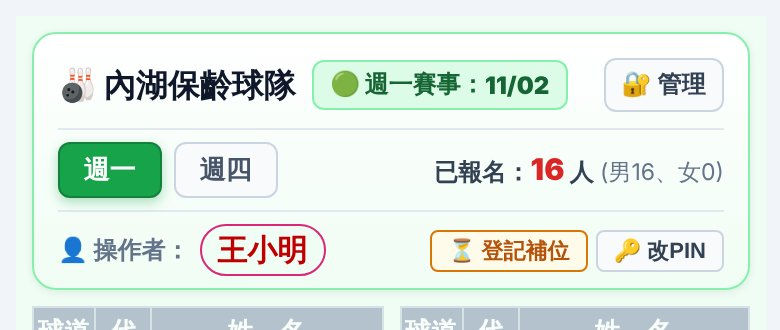
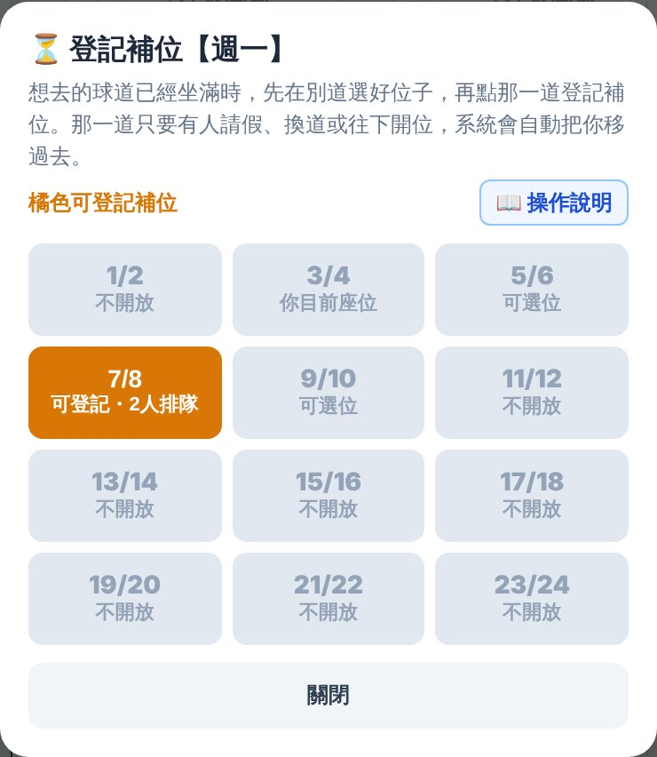
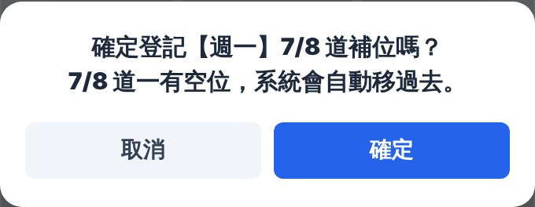
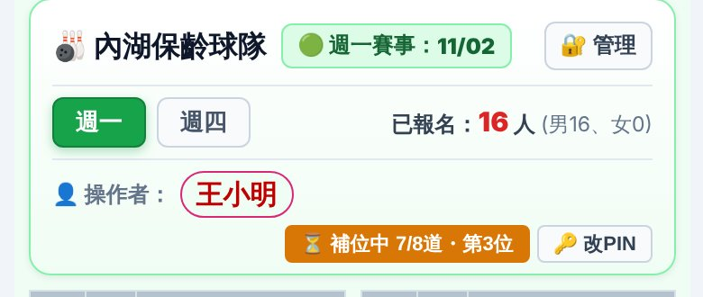
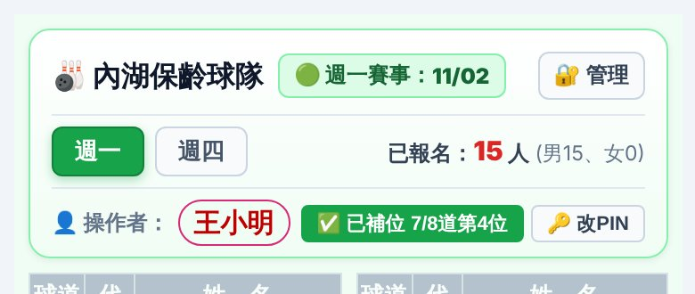
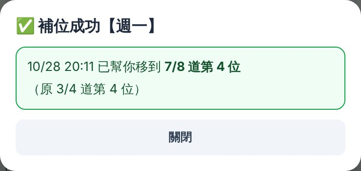
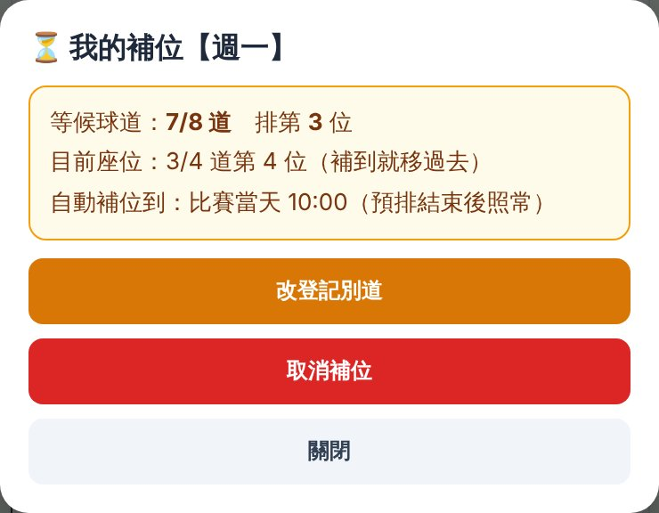

想去的球道已經坐滿了嗎？
先在別道選好位子，再登記補位，
那一道一有空位，系統會自動幫你移過去。
例如請假後想歸隊、想回原本的球道，但那一道已經坐滿了。
先在球道表點「＋ 可選位」入座（任何一道都可以）。
按網頁上方「👤 操作者」那一行、改PIN 旁邊的 ⏳ 登記補位。

點想去的橘色球道。橘色格會顯示目前有幾個人在排隊；灰色的道不能登記（有空位的道請直接回球道表入座）。

按「確定」就登記好了。

按鈕會變成 ⏳ 補位中 7/8道・第3位，看得到你排第幾位。

那一道一出現空位，系統會自動把你從原本的位子移過去，按鈕變成綠色 ✅ 已補位 7/8道第4位。網頁開著的話會馬上跳出提示。

再按一次綠色按鈕，可以看到幾點幾分移到哪裡。

補位中再按一次按鈕，會打開「我的補位」：

| 🙋 有人請假 | 網頁請假或 LINE「-1」都算 |
| 🔀 有人換道 | 那一道有人換到別道 |
| 📈 往下開位 | 報名人數變多，每道往下開第 5、6、7、8 位 |
| 🎳 開新球道 | 幹部加開球道或調整席位 |
有問題請洽幹部